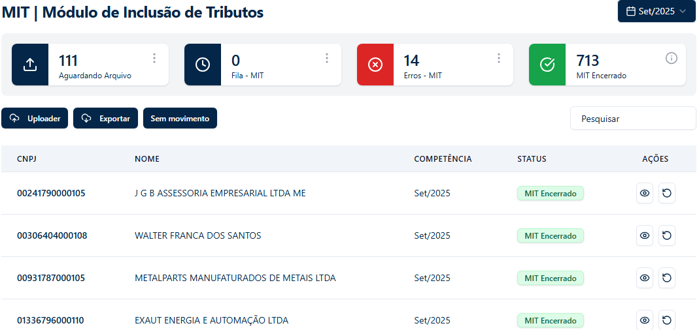
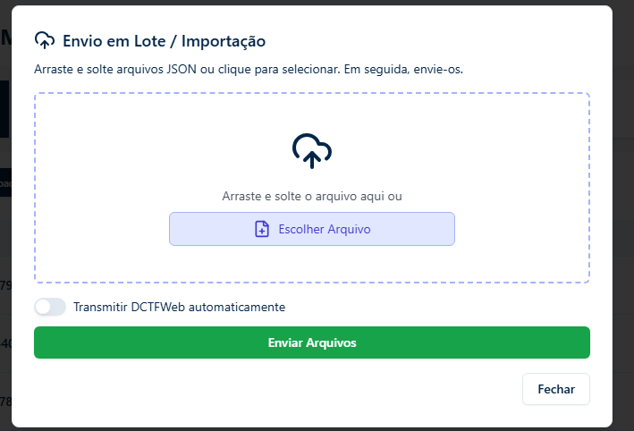
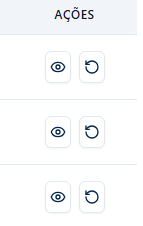
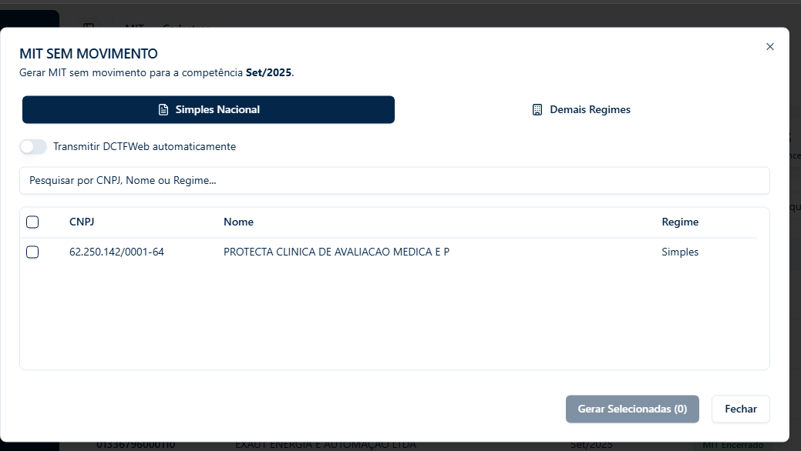
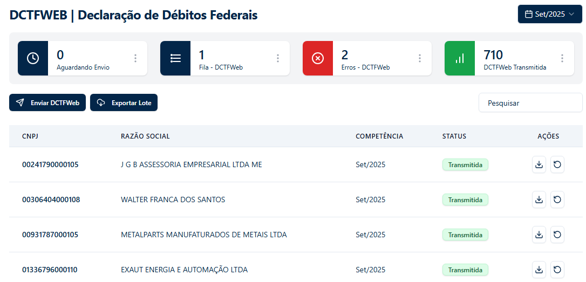
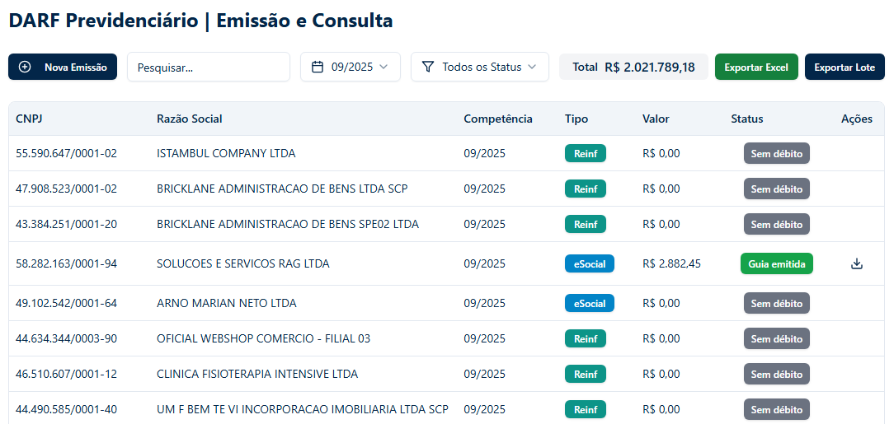

Tela Principal: O Dashboard MIT
Esta é a sua central de controle para o encerramento dos arquivos MIT. A tela principal oferece uma visão geral do status de processamento de todas as empresas.
Os cards no topo funcionam como filtros rápidos. Clicando em um deles, a lista abaixo é atualizada para mostrar apenas as empresas com aquele status:
- Aguardando Arquivo: Empresas que ainda não tiveram arquivos enviados.
- Fila - MIT: Arquivos que estão na fila de processamento.
- Erros - MIT: Empresas onde ocorreu algum erro durante a apuração.
- MIT Encerrado: Obrigações processadas e finalizadas com sucesso.
Envio de Arquivos em Lote
Para iniciar o processo, clique no botão "Uploader". Isso abrirá a janela de importação.
Aqui, basta arrastar e soltar os arquivos JSON gerados pelo seu sistema contábil, ou clicar em "Escolher Arquivo" para selecioná-los.
Transmissão Automática: Se o seletor 'Transmitir DCTFWeb automaticamente' estiver ATIVADO, o sistema enviará a DCTFWeb para todas as empresas dos arquivos MIT que você está subindo.
Acompanhamento e Ações (MIT)
Na lista de empresas, a coluna "Ações" permite interagir com cada obrigação processada.
Visualizar: Exibe o retorno fornecido pela Receita Federal (id da apuração, datas), servindo como comprovante.
Reprocessar: Permite enviar novamente a obrigação para a fila de processamento se necessário.
Geração de MIT Sem Movimento
Ao clicar no botão "Sem movimento", o seguinte modal é exibido, permitindo gerar o MIT sem movimento em massa, garantindo a carga para a DCTFWeb.
Módulo DCTFWeb
Gerencie envios pendentes e consulte os já realizados. Use o botão 'Exportar Lote' para baixar planilha e todos os recibos em `.zip`.
Módulo DARF | Emissão (MIT)
As guias DARF referentes aos impostos do MIT são geradas automaticamente assim que o MIT é processado com sucesso.

Módulo DARF | Previdenciário
Clique em 'Nova Emissão', selecione as fontes (eSocial, Reinf, MIT) e as empresas desejadas para gerar as guias.

Após a emissão, baixe as guias individualmente ou use 'Exportar Lote' para baixar todas de uma vez.
Situação Fiscal (Pendências)
Monitore se suas empresas estão Regular ou Irregular na Receita Federal sem acessar o eCAC manualmente.

Clique em "Solicitar Relatório" e selecione a empresa. Após processamento, o status aparecerá na coluna "Situação".

Relatório Oficial: Clique no ícone de download (📥) na linha da empresa Irregular para baixar o PDF detalhado das pendências.